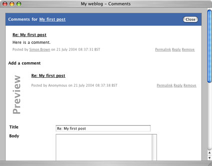

|
Pebble allows visitors to your website to leave comments on your blog entries. Comments are enabled for new blog entries by default, and can be disabled so that visitors can't leave comments.
In the default theme, the number of comments for any blog entry is shown underneath the blog entry itself along with a Comments[x] link that opens a popup window displaying all of the comments for that entry.
If for any reason you wish to remove a comment, just click the Remove link underneath the appropriate comment and click OK when asked for confirmation. Like the other admin features, this link will only show up if you have logged in.
Pebble supports nested comments for threads of conversation and allows readers to preview their comments before posting them to your blog. If comment notifications have been enabled in the blog properties, e-mails will be sent out when new comments are added to the blog owner and anybody that has left their e-mail address. Readers can opt out of this on a per blog entry basis by entering their e-mail address in the form at the bottom of the comments window.
|